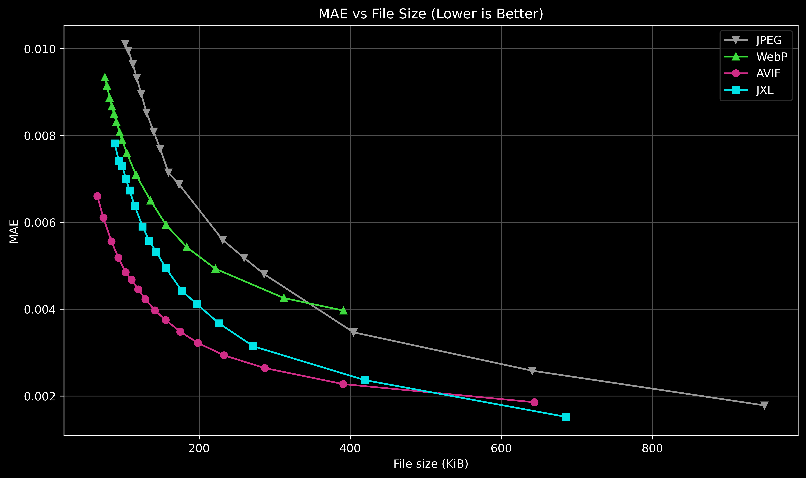
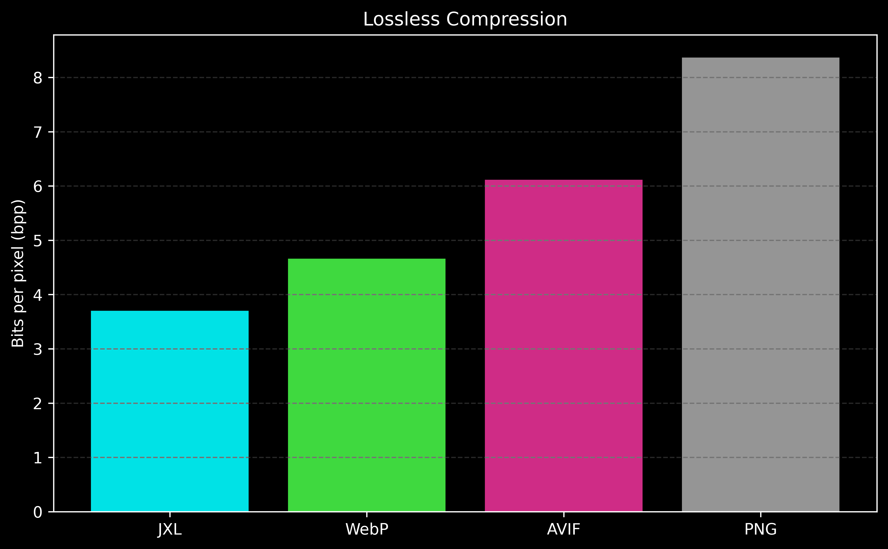

Introduction
AVIF and JPEG XL are the two most relevant "next-gen" image formats today. AVIF is built on top of AV1, which is primarily a video codec. On the other hand, JPEG XL evolved from Pik and FUIF, and it was built from the ground up to be an image codec. While this does not sound particularly important, as a video key-frame is essentially an image as well, JPEG XL has a few advantages:
- Higher-resolution images are properly supported (AVIF is capped at 65536x65536).
- Higher colour-depths are properly supported (AVIF is capped at 12 bits).
- Progressive decoding is properly supported.
Whether or not these differences are super relevant will depend on the use-case, but it's undeniable that JPEG XL is more future-proof than AVIF at the moment but the latter does have a few advantages too:
- It has hardware decoding support inherited from AV1.
- It has stellar animation support since it's literally a video codec.
- It's slightly better supported (all major browsers support AVIF).
Why am I writing all of this? Well... In 2022 Google made the controversial decision of removing JPEG XL support from Chromium. Naturally, this was a significant blow to its general adoption. However, Apple has recently (2024) adopted JPEG XL, which prompted Google to seemingly reconsider its original stance on the matter.
It's relatively easy to find articles comparing these formats, but they're almost always somewhat biased towards one or the other... I don't think I've ever seen any proper comparison focused on anime-style art either.
Hopefully my motivations are pretty clear now: As an outsider who has nothing to do with either format, I simply want to compare them on anime-style art.
32 anime-style 1920x1080 images were encoded. The thumbnails below show what they look like:

Lossy Compression
AVIF and JPEG XL images were encoded calling avifenc and cjxl directly:
avifenc input.png -q [quality] -y 444 output.avif
cjxl input.png -q [quality] output.jxl
JPEG (mozjpeg) was also added to the mix as a comparison point.
For [quality], 16 equally spaced values between 50 and 99 were used. This was done to constrain the results to the "usable" range.
The choice of metric is controversal... For now I'll stick to MAE as a relatively neutral distortion metric:

Lossless Compression
To create the lossless encodes, avifenc and cjxl were called with the following arguments:
avifenc input.png -l output.avif
cjxl input.png -q 100 output.jxl
PNG and WebP were both added to the mix as comparison points.
Since the outputs are lossless, no quality metric is needed, we can simply use a compression metric like bits per pixel instead:

Conclusion
For lossy compression on mostly default settings, AVIF outperforms JPEG XL on most quality targets. JPEG XL, however, has an edge on very high quality settings (-q 99).
For lossless compression, they're not even close, JPEG XL is simply way ahead. AVIF is actually worse than WebP, which is its spiritual predecessor.